Logic and Proof
11 Sets
We have come to a turning point in this textbook. We will henceforth abandon natural deduction, for the most part, and focus on ordinary mathematical proofs. We will continue to think about how informal mathematics can be represented in symbolic terms, and how the rules of natural deduction play out in the informal setting. But the emphasis will be on writing ordinary mathematical arguments, not designing proof trees. Lean will continue to serve as a bridge between the informal and formal realms.
In this chapter, we consider a notion that has come to play a fundamental role in mathematical reasoning, namely, that of a "set."
11.1 Elementary Set Theory
In a publication in the journal Mathematische Annalen in 1895, the German mathematician Georg Cantor presented the following characterization of the notion of a set (or Menge, in his terminology):
By a set we mean any collection M of determinate, distinct objects (called the elements of M) of our intuition or thought into a whole.
Since then, the notion of a set has been used to unify a wide range of abstractions and constructions. Axiomatic set theory, which we will discuss in a later chapter, provides a foundation for mathematics in which everything can be viewed as a set.
On a broad construal, any collection can be a set; for example, we
can consider the set whose elements are Ringo Star, the number 7, and
the set whose only member is the Empire State Building. With such a
broad notion of set we have to be careful: Russell's paradox has us
consider the set  of all sets that are not elements of themselves,
which leads to a contradiction when we ask whether is an element
of itself. (Try it!) The axioms of set theory tell us what sets exist,
and have been carefully designed to avoid paradoxical sets like that
of the Russell paradox.
of all sets that are not elements of themselves,
which leads to a contradiction when we ask whether is an element
of itself. (Try it!) The axioms of set theory tell us what sets exist,
and have been carefully designed to avoid paradoxical sets like that
of the Russell paradox.
In practice, mathematicians are not so freewheeling in their use of sets. Typically, one fixes a domain such as the natural numbers, and consider subsets of that domain. In other words, we consider sets of numbers, sets of points, sets of lines, and so on, rather than arbitrary "sets." In this text, we will adopt this convention: when we talk about sets, we are always implicitly talking about sets of elements of some domain.
Given a set  of objects in some domain and an object
of objects in some domain and an object  , we write
, we write
 to say that is an element of . Cantor's
characterization suggests that whenever we have some property,
to say that is an element of . Cantor's
characterization suggests that whenever we have some property,  , of
a domain, we can form the set of elements that have that
property. This is denoted using "set-builder notation" as . For example, we can consider all the following sets of
natural numbers:
, of
a domain, we can form the set of elements that have that
property. This is denoted using "set-builder notation" as . For example, we can consider all the following sets of
natural numbers:
This last set is written more simply  . If the domain is
not clear from the context, we can specify it by writing it
explicitly, for example, in the expression .
. If the domain is
not clear from the context, we can specify it by writing it
explicitly, for example, in the expression .
Using set-builder notation, we can define a number of common sets and
operations. The empty set,  , is the set with no elements:
, is the set with no elements:
Dually, we can define the universal set, , to be the set consisting of every element of the domain:
Given to sets and  , we define their union to be the set of
elements in either one:
, we define their union to be the set of
elements in either one:
And we define their intersection to be the set of elements of both:
We define the complement of a set of to be the set of elements
that are not in :
We define the set difference of two sets and to be the set
of elements in but not :
Two sets are said to be equal if they have exactly the same
elements. If and are sets, is said to be a subset of
, written  , if every element of is an element of
. Notice that is equal to if and only if is a subset of
and is a subset of .
, if every element of is an element of
. Notice that is equal to if and only if is a subset of
and is a subset of .
Notice also that just everything we have said about sets so far is readily representable in symbolic logic. We can render the defining properties of the basic sets and constructors as follows:
The assertion that is a subset of can be written , and the assertion that is equal to be can be
written  . These are all
universal statements, that is, statements with universal
quantifiers in front, followed by basic assertions and propositional
connectives. What this means is that reasoning about sets formally
often amounts to using nothing more than the rules for the universal
quantifier together with the rules for propositional logic.
. These are all
universal statements, that is, statements with universal
quantifiers in front, followed by basic assertions and propositional
connectives. What this means is that reasoning about sets formally
often amounts to using nothing more than the rules for the universal
quantifier together with the rules for propositional logic.
Logicians sometimes describe ordinary mathematical proofs as informal, in contrast to the formal proofs in natural deduction. When writing informal proofs, the focus is on readability. Here is an example.
Theorem. Let , , and  denote sets of elements of some
domain, . Then
denote sets of elements of some
domain, . Then  .
.
Proof. Let be arbitrary, and suppose is in  . Then is in , and either is in or is in . In
the first case, is in and , and hence in . In the
second case, is in and , and hence . Either way,
we have that is in .
. Then is in , and either is in or is in . In
the first case, is in and , and hence in . In the
second case, is in and , and hence . Either way,
we have that is in .
Conversely, suppose is in . There are
now two cases.
First, suppose is in . Then is in both and
. Since is in , it is also in 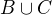, and so is in
.
The second case is similar: suppose is in . Then is
in both and , and so also in . Hence, in this case
also, is in , as required.
Notice that this proof does not look anything like a proof in
symbolic logic. For one thing, ordinary proofs tend to favor words
over symbols. Of course, mathematics uses symbols all the time, but
not in place of words like "and" and "not"; you will rarely, if ever,
see the symbols 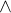 and  in a mathematics textbook, unless
it is a textbook specifically about logic.
in a mathematics textbook, unless
it is a textbook specifically about logic.
Similarly, the structure of an informal proof is conveyed with ordinary paragraphs and punctuation. Don't rely on pictorial diagrams, line breaks, and indentation to convey the structure of a proof. Rather, you should rely on literary devices like signposting and foreshadowing. It is often helpful to present an outline of a proof or the key ideas before delving into the details, and the introductory sentence of a paragraph can help guide a reader's expectations, just as it does in an expository essay.
Nonetheless, you should be able to see elements of natural deduction implicitly in the proof above. In formal terms, the theorem is equivalent to the assertion

and the proof proceeds accordingly. The phrase "let be arbitrary"
is code for the  introduction rule, and the form of the
rest of the proof is a 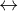 introduction. Saying that is in
introduction rule, and the form of the
rest of the proof is a 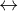 introduction. Saying that is in  is implicitly an "and," and the argument uses
elimination to get and . Saying
is implicitly an "and," and the argument uses
elimination to get and . Saying  is implicitly an "or," and the proof then splits on
cases, depending on whether or
is implicitly an "or," and the proof then splits on
cases, depending on whether or  .
.
Modulo the unfolding of definition of intersection and union in terms of "and" and "or," the "only if" direction of the previous proof could be represented in natural deduction like this:

In the next chapter, we will see that this logical structure is made manifest in Lean. But writing long proofs in natural deduction is not the most effective to communicate the mathematical ideas. So our goal here is to teach you to think in terms of natural deduction rules, but express the steps in ordinary English.
Here is another example.
Theorem. .
Proof. Let be arbitrary, and suppose is in . Then is in  but not , and hence it
is in but not in or . This means that is in but not
, and so in .
but not , and hence it
is in but not in or . This means that is in but not
, and so in .
Conversely, suppose is in . Then is in
, but not in . In particular, is in neither nor
, because otherwise it would be in . So is in  , and hence in
, and hence in  .
.
Perhaps the biggest difference between informal proofs and formal proofs is the level of detail. Informal proofs will often skip over details that are taken to be "straightforward" or "obvious," devoting more effort to spelling out inferences that are novel of unexpected.
Writing a good proof is like writing a good essay. To convince your readers that the conclusion is correct, you have to get them to understand the argument, without overwhelming them with unnecessary details. It helps to have a specific audience in mind. Try speaking the argument aloud to friends, roommates, and family members; if their eyes glaze over, it is unreasonable to expect anonymous readers to do better.
One of the best ways to learn to write good proofs is to read good proofs, and pay attention to the style of writing. Pick an example of a textbook that you find especially clear and engaging, and think about what makes it so.
Natural deduction and formal verification can help you understand the components that make a proof correct, but you will have to develop an intuitive feel for what makes a proof easy and enjoyable to read.
11.2 Calculations with Sets
Calculation is a central to mathematics, and mathematical proofs often involve carrying out a sequence of calculations. Indeed, a calculation can be viewed as a proof in and of itself that two expressions describe the same entity.
In high school algebra, students are often asked to prove identities like the following:
Proposition. ,
for every natural number  .
.
In some places, students are asked to write proofs like this:
Proof.

Mathematicians generally cringe when they see this. Don't do it! It looks like an instance of forward reasoning, where we start with a complex identity and end up proving 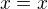. Of course, what is really meant is that each line follows from the next. There is a way of expressing this, with the phrase "it suffices to show." The following presentation comes closer to mathematical vernacular:
Proof. We want to show
To do that, it suffices to show
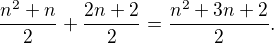
For that, it suffices to show
But this last equation is clearly true.
The narrative doesn't flow well, however. Sometimes there are good reasons to work backwards in a proof, but in this case it is easy to present the proof in a more forward-directed manner. Here is one example:
Proof. Calculating on the left-hand side, we have
On the right-hand side, we also have
So , as required.
Mathematicians often use the abbreviations "LHS" and "RHS" for "left-hand side" and "right-hand side," respectively, in situations like this. In fact, here we can easily write the proof as a single forward-directed calculation:
Proof.
Such a proof is clear, compact, and easy to read. The main challenge to the reader is to figure out what justifies each subsequent step. Mathematicians sometimes annotate such a calculation with additional information, or add a few words of explanation in the text before and/or after. But the ideal situation is to carry out the calculation is small enough steps so that each step is straightforward, and needs to no explanation. (And, once again, what counts as "straightforward" will vary depending on who is reading the proof.)
We have said that two sets are equal if they have the same
elements. In the previous section, we proved that two sets are equal
by reasoning about the elements of each, but we can often be more
efficient. Assuming , , and are subsets of some domain
, the following identities hold:
- 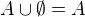


This allows us to prove further identities by calculating. Here is an example.
Theorem. Let and be subsets of some domain . Then  .
.
Proof.
Here is another example.
Theorem. Let and be subsets of some domain . Then  .
.
Proof.
Classically, you may have noticed that propositions, under logical equivalence, satisfy identities similar to sets. That is no coincidence; both are instances of boolean algebras. Here are the identities above translated to the language of a boolean algebra:
- 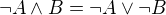
Translated to propositions, the first theorem above is as follows:
Theorem. Let and be elements of a boolean algebra. Then  .
.
Proof.
11.3 Indexed Families of Sets
If  is a set, we will sometimes wish to consider a family
is a set, we will sometimes wish to consider a family
 of sets indexed by elements of . For example, we
might be interested in a sequence
of sets indexed by the natural numbers. The concept is best illustrated by
some examples.
of sets indexed by elements of . For example, we
might be interested in a sequence
of sets indexed by the natural numbers. The concept is best illustrated by
some examples.
- For each natural number , we can define the set to be the
set of people alive today that are of age . For each age we have
the corresponding set. Someone of age 20 is an element of the set
, while a newborn baby is an element of . The set
is empty. This family is a is a family
of sets indexed by the natural numbers.
- For every real number
 we can define to be the set of
positive real numbers larger than , so . Then is a family of
sets indexed by the real numbers.
we can define to be the set of
positive real numbers larger than , so . Then is a family of
sets indexed by the real numbers. - For every natural number we can define as the set of divisors of .
Given a family  of sets indexed by , we can form
its union:
of sets indexed by , we can form
its union:
We can also form the intersection of a family of sets:
So an element is in if and only
if is in 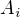 for some  in , and is in
if and only if is in for every
in . These operations are represented in symbolic logic by the existential
and the universal quantifiers. We have:
in , and is in
if and only if is in for every
in . These operations are represented in symbolic logic by the existential
and the universal quantifiers. We have:
Returning to the examples above, we can compute the union and
intersection of each family. For the first example, is the set of all living people, and  . Also, , the set
of all positive real numbers, and . For the last example, we have and , since 1 is a divisor of
every natural number.
. Also, , the set
of all positive real numbers, and . For the last example, we have and , since 1 is a divisor of
every natural number.
Suppose that contains just two elements, say . Let
be a family of sets indexed by . Because has
two elements, this family consists of just the two sets and
. Then the union and intersection of this family are just the
union and intersection of the two sets:
This means that the union and intersection of two sets are just a special case of the union and intersection of a family of sets.
We also have equalities for unions and intersections of families of sets. Here are a few of them:
In the last two lines, is indexed by two sets and
 . This means that for every
. This means that for every  and we have a set
. For the first four equalities, try to figure out what the
rule means if the index set contains two elements.
and we have a set
. For the first four equalities, try to figure out what the
rule means if the index set contains two elements.
Let's prove the first identity. Notice how the logical forms of the assertions and dictate the structure of the proof.
Theorem. Let be any subset of some domain 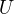, and let be a family of subsets of indexed by . Then
Proof. Suppose is in  . Then is
in and is in for some . So is in , and hence in .
. Then is
in and is in for some . So is in , and hence in .
Conversely, suppose is in . Then,
for some  in , is in
in , is in  . Hence is in , and
since is in , it is in . Hence is
in , as required.
. Hence is in , and
since is in , it is in . Hence is
in , as required.
11.4 Cartesian Product and Power Set
The ordered pair of two objects  and
and  is denoted
is denoted  . We
say that is the first component and is the second
component of the pair. Two pairs are only equal if the first
component are equal and the second components are equal. In symbols,
if and only if and .
. We
say that is the first component and is the second
component of the pair. Two pairs are only equal if the first
component are equal and the second components are equal. In symbols,
if and only if and .
Some axiomatic foundations take the notion of a pair to be
primitive. In axiomatic set theory, it is common to define an
ordered pair to be a particular set, namely
 Notice that if
Notice that if  , this set has only one element:
, this set has only one element:
The following theorem shows that this definition is reasonable.
Theorem. Using the definition of ordered pairs above, we have  if and only if and .
if and only if and .
Proof. If and then clearly . For the other direction, suppose that , which means
Suppose first that . Then . This means that
and  , from which we conclude that and .
, from which we conclude that and .
Now suppose that  . If then we conclude
that and are both equal to
. If then we conclude
that and are both equal to  , contradicting
, contradicting  . Since , must be equal to 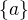, which means
that . We know that , and since we know
. Since , must be equal to 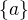, which means
that . We know that , and since we know  , we conclude
, we conclude  . This means that , since , we conclude that .
. This means that , since , we conclude that .
Hence in both cases we conclude that and , proving the theorem.
Using ordered pairs we can define the ordered triple to be
. Then we can prove that if and
only if  , and , which you are asked to do in
the exercises. We can also define ordered
, and , which you are asked to do in
the exercises. We can also define ordered  -tuples, which are
sequence of objects, in a similar way.
-tuples, which are
sequence of objects, in a similar way.
Given two sets and , we define the cartesian product  of these two sets as the set of all pairs where the first
component is an element in and the second component is an element
in . In set-builder notation this means
of these two sets as the set of all pairs where the first
component is an element in and the second component is an element
in . In set-builder notation this means
Note that if and are subsets of a particular domain  , the set
, the set  need not be a subset of the same
domain. However, it will be a subset of .
need not be a subset of the same
domain. However, it will be a subset of .
Given a set we can define the power set to be
the set of all subsets of . In set-builder notation we can write
this as
If is a subset of , may not be a
subset , but it is always a subset of .
11.5 Exercises
- Prove the following theorem: Let , , and be sets of
elements of some domain. Then . (Henceforth, if we don't specify natural deduction or
Lean, ``prove'' and ``show'' mean give an ordinary mathematical
proof, using ordinary mathematical language rather than symbolic
logic.)
- Prove the following theorem: Let and be sets of elements of
some domain. Then .
- Two sets and are said to be disjoint if they have no
element in common. Show that if and are disjoint, , and , then and are disjoint.
- Let and be sets. Show , by showing that both sides have
the same elements.
- Let , , and be subsets of some domain . Give
a calculational proof of the identity , using the identities above. Also use the
fact that, in general, .
- Similarly, give a calculational proof of .
- Give calculational proofs of the following:
Prove that if is a family indexed by two sets
and , then
Also, find a family where the reverse inclusion does not hold.
Prove using calculational reasoning that
The notation
 means .
means .
- Using the definition , show that
 if and only if , and .
if and only if , and . - Prove that
- Prove that . Find an expression for consisting of unions of cartesian products, and prove that your expression is correct.
- Prove that that if and only if .